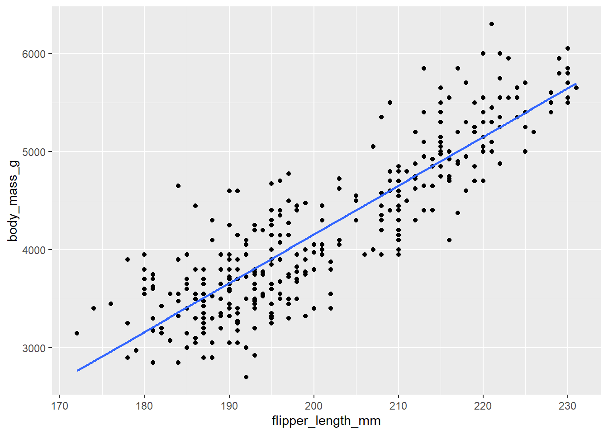
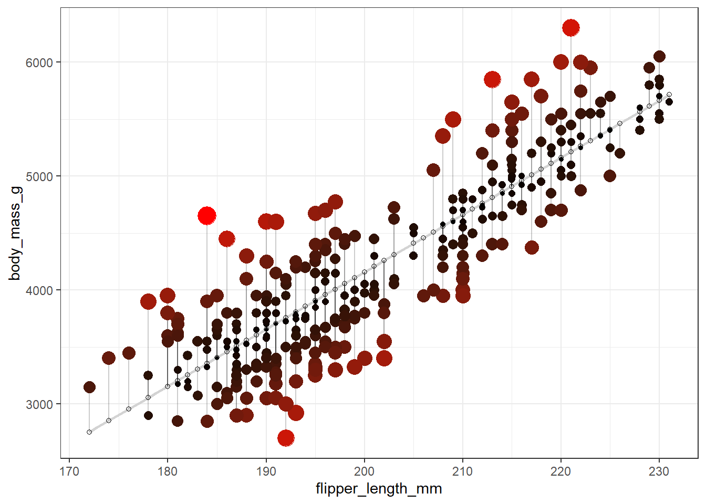

Regression with a Single Predictor
Suggested Answers
Packages
Today, we will revisit the penguins data set. If needed, please re-familiarize yourself by reading the following context and taking a glimpse at the data set before we get started.
This data set comprising various measurements of three different penguin species, namely Adelie, Gentoo, and Chinstrap. The rigorous study was conducted in the islands of the Palmer Archipelago, Antarctica. These data were collected from 2007 to 2009 by Dr. Kristen Gorman with the Palmer Station Long Term Ecological Research Program, part of the US Long Term Ecological Research Network. The data set is called penguins.
- Take a glimpse of the data set below.
glimpse(penguins)Rows: 344
Columns: 8
$ species <fct> Adelie, Adelie, Adelie, Adelie, Adelie, Adelie, Adel…
$ island <fct> Torgersen, Torgersen, Torgersen, Torgersen, Torgerse…
$ bill_length_mm <dbl> 39.1, 39.5, 40.3, NA, 36.7, 39.3, 38.9, 39.2, 34.1, …
$ bill_depth_mm <dbl> 18.7, 17.4, 18.0, NA, 19.3, 20.6, 17.8, 19.6, 18.1, …
$ flipper_length_mm <int> 181, 186, 195, NA, 193, 190, 181, 195, 193, 190, 186…
$ body_mass_g <int> 3750, 3800, 3250, NA, 3450, 3650, 3625, 4675, 3475, …
$ sex <fct> male, female, female, NA, female, male, female, male…
$ year <int> 2007, 2007, 2007, 2007, 2007, 2007, 2007, 2007, 2007…We are going to investigate the relationship between a penguin’s flipper length and their body mass. Specifically, we are interested in the effect flipper length has on the body mass of penguins.
- Based on our research question, which variable is the response variable?
body mass in the response; flipper length is the explanatory
- Now, visualize the relationship between the two variables. Include the “line of best fit” in your plot. Recall from a a previous lab, we can fit this line using
geom_smooth. If we want to fit a straight line, use the argumentmethod = "lm". Turn the standard error bars off usingse=Fargument.
penguins |>
ggplot(
aes(x = flipper_length_mm, y = body_mass_g)
) +
geom_point() +
geom_smooth(method = "lm" , se = F)`geom_smooth()` using formula = 'y ~ x'Warning: Removed 2 rows containing non-finite values (`stat_smooth()`).Warning: Removed 2 rows containing missing values (`geom_point()`).
This line estimates the relationship between our two variables. Below, we will practice writing out population and estimated models.
Model these Data
- Write the population model below that explains the relationship between body mass and flipper length.
Hint: You can type equations within dollar signs. LaTeX equations are authored using standard Pandoc markdown syntax (the editor will automatically recognize the syntax and treat the equation as math in the code chunks). It will appear as rendered math in your document.
Useful tips:
“;” is a space in Pandoc markdown
More tips below:
\(x^2 \; superscript\)
\(x_2 \; subscript\)
\(\hat{x}\; adds\; hat\; to\; x\)
\(\beta \; this\; is\; beta\)
\(\epsilon\; this\; is\; epsilon\)
Example:
\(\hat{x^n} + \beta^n = z_n + \epsilon_i\)
\(body-mass_i = \beta_o + \beta_1*flipper-length_i +\epsilon_i\)
- Now, fit the linear regression model and display the results. Write the estimated model output below.
linear_reg() |>
set_engine("lm") |>
fit(body_mass_g ~ flipper_length_mm, data = penguins) |>
tidy()# A tibble: 2 × 5
term estimate std.error statistic p.value
<chr> <dbl> <dbl> <dbl> <dbl>
1 (Intercept) -5781. 306. -18.9 5.59e- 55
2 flipper_length_mm 49.7 1.52 32.7 4.37e-107$ = -5872 + 50.2*flipper-length $
How was this model fit?
See the code below. Note: this code is beyond the scope of this course, although I bet we know most of it already!
penguins <- na.omit(penguins)
fit <- lm(body_mass_g ~ flipper_length_mm, data = penguins)
penguins$predicted <- predict(fit)
penguins$residuals <- residuals(fit)
penguins |>
ggplot(aes(x = flipper_length_mm, y = body_mass_g)) +
geom_smooth(method = "lm", se = FALSE, color = "lightgrey") +
geom_segment(aes(xend = flipper_length_mm, yend = predicted), alpha = .2) +
# > Color AND size adjustments made here...
geom_point(aes(color = abs(residuals), size = abs(residuals))) + # size also mapped
scale_color_continuous(low = "black", high = "red") +
guides(color = "none", size = "none") + # Size legend also removed
# <
geom_point(aes(y = predicted), shape = 1) +
theme_bw()`geom_smooth()` using formula = 'y ~ x'
Model question
Please write the model equation below:
$ = -5872 + 50.2*flipper-length $
Interpretation
- Interpret the slope and the intercept in the context of the data.
Hint: Think about what happens to y when we increase x by 1.
For a 1 mm increase in flipper length, we estimate on average a 50.2 g increase in body mass
For a 1 mm increase in flipper length, we estimate a mean increase of 50.2 g in body mass
For a penguin with 0 mm flipper length, we estimate on average a body mass of -5782g.
Does the intercept make sense? Why or why not? In statistics, what does predicting outside the bounds of our data called?
Extrapolation
Prediction
- What is the estimated mean body mass for a penguin with a flipper length of 210?
-5872 + 50.2*210[1] 4670- What is the estimated mean body mass for a penguin with a flipper length of 100?
-5872 + 50.2*100[1] -852How can we make these predictions in R?
Fit your model in R below
Name it model1 and make sure to not use the
tidy()argument when fitting your modelNext, we can use the
predictfunction in R
Steps 1 and 2
model1 <- linear_reg() |>
set_engine("lm") |>
fit(body_mass_g ~ flipper_length_mm, data = penguins)Step 3
Fill in the code below
predict(model1, data.frame(flipper_length_mm = 210))Correlation and r-squared
Below, calculate both the correlation coefficient and r-squared value between flipper length and body mass. Interpret each in the context of the problem.
Next Question
- Now, we will investigate another question. A different researcher wants to look at body weight of penguins based on the island they were recorded on. What’s different between this question and the last? Hint: Think about the variable type.
island is categorical
- Make a dot plot, using geom_point, with species on the x-axis to investigate this relationship below. Additionally, calculate the mean body mass by island below.
penguins |>
ggplot(
aes(
x = island, y = body_mass_g
)) +
geom_point()
- Now, fit the linear regression model and display the results. Write the estimated model output below.
linear_reg() |>
set_engine("lm") |>
fit(body_mass_g ~ island, data = penguins) |>
tidy()# A tibble: 3 × 5
term estimate std.error statistic p.value
<chr> <dbl> <dbl> <dbl> <dbl>
1 (Intercept) 4719. 49.4 95.4 2.22e-242
2 islandDream -1000. 75.4 -13.3 1.74e- 32
3 islandTorgersen -1011. 105. -9.67 1.23e- 19Interpretation …
To Start Class on Tuesday!